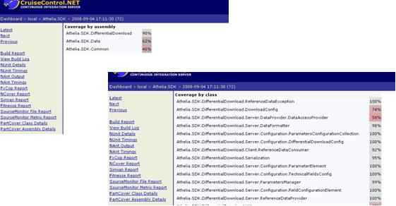

What is PartCover?
PartCover is a tool to calculate unit test code coverage. Sure many people knows NCover, which has been extensively used to calculate code coverage in combination with cruisecontrol.net, PartCover does just the same with the only difference that it keeps being open source as of today.
PartCover is based on the instrumentation of assemblies instead of the instrumentation or modification of the source code itself, this approach having advantages and drawbacks. The main advantage is source code does not need to be modified and compiled (as it was in primitive versions of NCover), thus saving significant time in your builds. Besides that you don't need assembly debug symbols to get your coverage metrics.
Drawbacks are mainly related to the fact that assemblies IL code suffer a lot of smart optimizations at compile time and so it may not reflect all the handwritten branches found in the source code.
Integrating PartCover in your NANT builds
To sum up, in order to integrate PartCover in your NANT build scripts you will need to perform the following steps:
- Invoke partcover within your nant script
- Tell PartCover how to run your unit test framework (in this example we'll tell it how to run nunit-console.exe so the unit tests get executed)
- Tell PartCover which assembly or assemblies containing unit tests you would want to execute
- Tell PartCover to generate an XML report file that we will later integrate into ccnet through a couple of XSL files
Before going on, a simple note on PartCover installation. This tool is not deployed with a simple xcopy, since it needs to register some COM components, so you will need to run the MSI installer before you can invoke the command line PartCover tool.
So we assume you've installed PartCover in your build server and we can invoke the command line tool like this "c:\buildtools\partcover\partcover.exe"
Let's imagine you have a visual studio solution (not mono or sharp develop specificities are covered here but the approach would be the same), and in this solution we have two class library projects, first one called "PartCoverTest.BusinessLogic" second called "PartCoverTest.UnitTest", that is to say a project containing our project logic and the second one containing the unit tests for that first project.
I will assume we are using nunit framework for this sample but any other framework will apply since what PartCover needs is to run unit tests. It does not rely on the unit test reports or any other unit test framework specifics. Just for comfort we will assume nunit as the unit test framework.
So, now that we have a unit test structure what we want is get our code coverage metrics.
We would write a NANT target called PartCover which may look like this one:
<!-- =============================================================================== --> <!-- run partcover to calculate code coverage --> <!-- =============================================================================== --> <target name="partcover"> <exec program="c:\buildtools\partcover\partcover.exe" failonerror="false"> <arg value="--target=c:\buildtools\nunit\nunit-console.exe" /> <arg value="--target-work-dir="c:\PartCoverTest\PartCoverTest.UnitTest"/> <arg value="--target-args="PartCoverTest.UnitTest.dll" /> <arg value="--include=[*]*" /> <arg value="--exclude=[nunit*]*" /> <arg value="--exclude=[PartCoverTest.UnitTest*]*" /> <arg value="--output="c:\PartCoverTest\ccnet-partcover-results.xml" /> </exec> </target>
We find an exec command which will execute the partcover through the command line, the arguments given to it are the following:
- "--target", we need to provide here the unit test framework application which will execute the unit tests. In our case we provide the nunit-console utility which is able to execute the unit tests found on the assemblies given through the command line parameters.
- "—target-work-dir", the working directory for the nunit-console application, normally the place where you have your unit test assembly.
- "—target-args", arguments for the nunit-console utility, obviously we give here the name of our unit test assembly so it gets executed by nunit-console.
- "--include", with this parameter we tell to PartCover what should be included in the coverage measurement. This is in fact a regular expression with which you address the qualified names of the types you want to include in the measure. In our case we first say "include everything" through the expression "[*]*", and then we exclude everything concerning the nunit framework assemblies "[nunit*]*" and we also exclude the types within the unit test assembly itself "[PartCoverTest.UnitTest*]*" of course, we don't need to get coverage on the unit testing code itself.
- "--output", finally we tell PartCover where the output report should be placed. In our case we put the xml report at the source code root. (we will later reference this file in the ccnet merging task so take note of the file).
This is enough to get a PartCover coverage report on our projects, let's make sure we generate the XML report before moving to the next step.
Integrating PartCover output into CC.net
Well, granted you were able to generate the PartCover report, let's now merge this file with ccnet reports so we can integrate these results in the ccnet dashboard.
First thing is to merge the output into ccnet build results, to do so I'm sure you already have a merging task in your ccnet configuration file. Something which should look like this:
<publishers>
<merge>
<files>
<file>c:\PartCoverTest\nunit-results.xml</file>
<file>c:\PartCoverTest\simian-results.xml</file>
<file>c:\PartCoverTest\ccnet-partcover-results.xml</file>
</files>
</merge>
<xmllogger/>
</publishers>
As an example I have added some nunit and simian files and then the merging of the PartCover output we previously learnt how to generate. This will merge the results of the PartCover report but now we need these results to be displayed on the dashboard.
In order to get PartCover data into the dashboard we will need first to copy two XSL files into ccnet\webdashboard\xsl folder.
We will find these two files in the PartCover directory (v2.2) the files are located at:
C:\partcoverinstalldir\xslt and they are "assembly.report.xslt" and "class.report.xslt" which I like to rename to "partcover.assembly.report.xsl" and "partcover.assembly.report.xsl". These two last files are the ones we need to copy to the webdashboard xsl directory.
Note: we need to modify these two files because PartCover ships them assuming that PartCover is the root node, so in these files we will find queries beginning like "/PartCoverReport/..." and we need to change all these queries to "//PartCoverReport/...", once done this the xsl files are ready.
Now we need to add these options to the build report menu in the dashboard, so we will open ccnet dashboard config file "dashboard.config" and look for the node "xslFileNames", under which we need to add the newly added PartCover files, it will look like this:
<buildPlugins>
<buildReportBuildPlugin>
<xslFileNames>
<!-- you need to add the following two lines -->
<xslFile>xsl\PartCover.assembly.report.xsl</xslFile>
<xslFile>xsl\PartCover.class.report.xsl</xslFile>
</xslFileNames>
...
Next step is to add the transformation options to the dashboard menu, to do so, you will notice that you have some children nodes for the <buildPlugins> node which are called "xslReportBuildPlugin", we need to add the assembly and class report plugins for PartCover here, so as children of <buildPlugins> you will add the following two options:
<buildPlugins>
. . .
<xslReportBuildPlugin
description="PartCover Class Details"
actionName="PartCoverDetailsBuildReport"
xslFileName="xsl\PartCover.class.report.xsl" />
<xslReportBuildPlugin
description="PartCover Assembly Details"
actionName="PartCoverDetailsAssemblyBuildReport"
xslFileName="xsl\PartCover.assembly.report.xsl" />
. . .
First node transforms the data to present a report at class level, so code coverage percentages at a class level. The second one presents the data summarized at assembly level, percentage of code coverage at assembly level.
Let's have a look at how these reports are presented in the dashboard UI:

Hope this helps.
References and Credits
| Url | Description |
|---|---|
| http://sourceforge.net/projects/partcover/ | PartCover home at sourceforge.net. Here you can get the installer |
| http://www.blog.latrompa.com/?p=7 | Blog where I get the xsl configuration for PartCover solved |
| http://www.bullseye.com/coverage.html | Very good paper on code coverage fundamentals |
{kind=link}